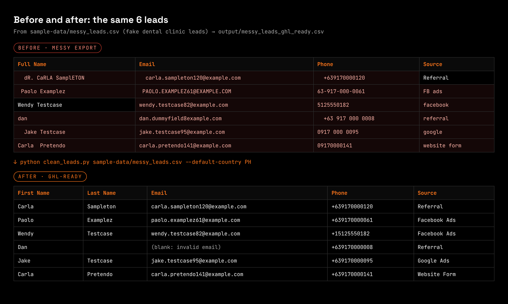
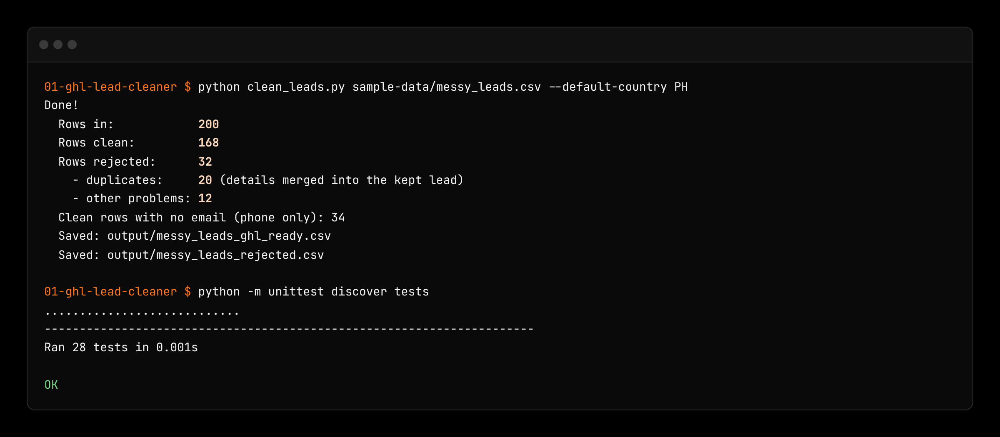
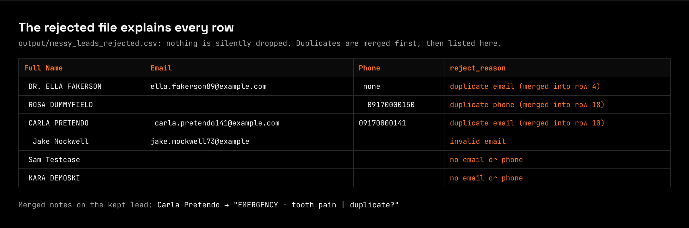

GHL Lead List Cleaner
A one-command tool that turns a messy lead spreadsheet into a clean GoHighLevel import file. Built with Claude Code.
Measured in testing with fake leads, not a live client
The problem
Clients hand over lead lists from Facebook Lead Ads, old spreadsheets and walk-in sign-ups. Importing them as-is breaks things in GHL:
- SMS fails. Phones arrive in many formats, like
0917 000 1234,(310) 555-0123and0491 570 123. GHL needs+639170001234. - Leads get messaged twice. The same person fills in two forms and becomes two contacts.
- Emails look like spam. “Hi dR. CaRLA” kills trust in the first line.
- Reports break. One source spelled five ways (
facebook,FB ads,Facebook Ad) hides which ad brings bookings.
The 200-row test list had 181 badly formatted names, 18 phone formats, 13 spellings of the lead source, 20 duplicates and 10 rows with no contact details.
The solution
A VA puts the client’s CSV in a folder and runs one command. The tool writes two files: a clean file ready for GHL, and a rejected file that explains every row it could not use.

What it does
| Fix | What it does |
|---|---|
| Names | Trims spaces, fixes capitals, removes titles like “Dr.”, splits full name into first and last |
| Emails | Lowercases and checks format. Never auto-fixes typos, so mail never goes to a stranger |
| Phones | Converts Philippine, US and Australian numbers to the +country format GHL needs for SMS |
| Sources and tags | Standardises lead sources and adds the client’s tags to every lead |
| Duplicates | Merges leads with the same email or phone. Blank fields are filled, and notes and tags are combined |
| Headers | Recognises common column names (E-mail Address, Mobile, Contact No.) and outputs GHL’s import columns |
| Report | Prints a summary and saves a rejected file with a reason for each row |
Proof
1. One command, with tests passing
The summary the tool prints after cleaning the 200-row list, followed by the automated test run.

2. Nothing is silently dropped
Every skipped row is listed with its reason. Duplicates are merged into the kept lead first, so details like “EMERGENCY - tooth pain” survive.

3. A second test with a different client brief
I ran a practice job for a fictional Australian physio clinic: 150 fake leads, different column names, and a client message with rules. Following those rules gave 125 clean leads, with 15 duplicates merged. The test also caught a real bug. The tool didn’t recognise the E-mail Address header. I fixed it and added a test so it can’t come back.
4. The code is public
- CLAUDE.md: the brief I wrote to guide the AI build.
- Tests: every phone format, email rule and duplicate merge.
- Client job checklist: the steps I follow for each client list, including the GHL import.
Results
Honesty note: These numbers come from fake test lists, not a live client. The run times are real timed runs.
| Metric | Dental test list | Physio practice job |
|---|---|---|
| Rows in | 200 | 150 |
| Clean leads ready for GHL | 168 | 125 |
| Duplicates found and merged | 20 of 20 planted | 15 of 15 planted |
| Rows with no contact details caught | 10 of 10 planted | 8 of 8 planted |
| Time to clean | 0.4 seconds | 0.4 seconds |
| Automated tests | 28, all passing | |
My decisions and why
- Never guess a phone’s country.
9170001234could be Philippine or US. The VA sets the client’s main country. A wrong guess sends SMS to the wrong person. - Keep the lead, not just the row. A lead with a bad phone but a good email is kept. Throwing it away over a typo loses a potential booking.
- Merge duplicates instead of deleting them. The first copy isn’t always the most complete. Merging keeps every phone, tag and note.
- Keep the clinic’s notes. Notes like “NDIS?” or “knee rehab after surgery” go to a custom field in GHL. Front-desk staff need them.
- Built for VAs, not developers. One command, plain error messages, and a step-by-step guide.
- Privacy first. Client files are blocked from GitHub. Only fake data is public.
How I used AI
Honesty note: Claude Code wrote most of the code. I set the rules, made the decisions and checked every output.
- I wrote the brief first. A CLAUDE.md set the rules: Python and pandas only, beginner-friendly code, fake data only, and PH, US and AU phones.
- I built in small steps. Fake data first, then the cleaner, then tests, then docs. I reviewed each step before moving on.
- I made the judgment calls. Keeping notes, merging duplicates and not guessing phones were my decisions, based on how clinic follow-up works in GHL.
- I tested it like a client job. The practice job found a bug the first test list missed.
What this means for a clinic or coach
- SMS reminders reach the patient, because every phone is in the right format.
- No double messages, because duplicates are merged before import.
- Accurate ad reports, because every source is spelled the same way.
- Same-day imports, so the VA’s time goes to follow-up, not spreadsheet cleanup.